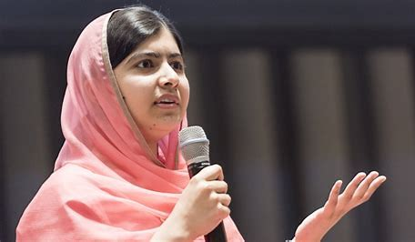
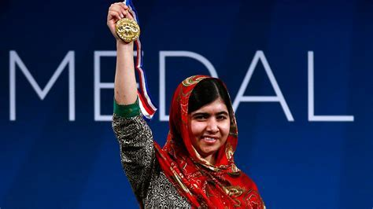

Malala Yousafzai
Malala Yousafzai, a symbol of courage and resilience, stood up with a loud and fearless voice in a world that continues to resist the basic rights of women and girls.


In Pakistan, where the Taliban were vehemently opposed to girls'
education, she bravely defended the right to education.
Here's a time line of Malala Yousafzai:
- 1997: Malala Yousafzai was born on July 12, 1997, in Mingora, Swat Valley, Pakistan.
- 2008: At the age of 11, Malala gave her first public speech advocating for girls' right to education, garnering media attention.
- 2009: Malala began blogging anonymously for BBC Urdu, sharing her experiences of life under Taliban rule and the ban on girls' education.
- 1937: Finishes university and takes a job in the US Forestry Service
- 2011: Malala received Pakistan's National Youth Peace Prize and was recognized as a young human rights activist.
- 2012: On October 9, 2012, Malala was attacked by the Taliban and severely injured. This attack shocked the world and garnered international support for her cause.
- 2013: Malala and her family moved to the United Kingdom to continue her treatment. She also published her first book, "I Am Malala."
- 2013: On July 12, Malala gave a speech at the United Nations, and her birthday was declared "Malala Day." This speech had a profound impact on the global community, drawing more attention to the issue of girls' education.
- 2014: At the age of 17, Malala became the youngest person ever to receive the Nobel Peace Prize, awarded for her struggle for girls' education. She shared the prize with Kailash Satyarthi, an Indian children's rights activist.
- 2017: Malala was accepted to the University of Oxford to study (PPE)
- 2020: Malala graduated from the University of Oxford.
- 2021: Malala continued her advocacy work by publishing articles and through the Malala Fund, fighting for girls' education and human rights worldwide.
Malala Yousafzai, with her remarkable courage and commitment, inspires millions of people around the world and continues to be a passionate advocate for girls' right to education. She exemplifies the power of one voice to stand against injustice and change the world.